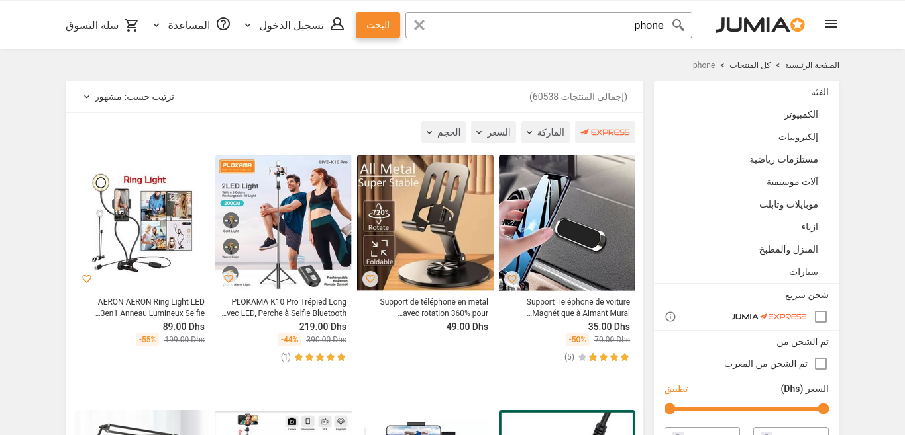
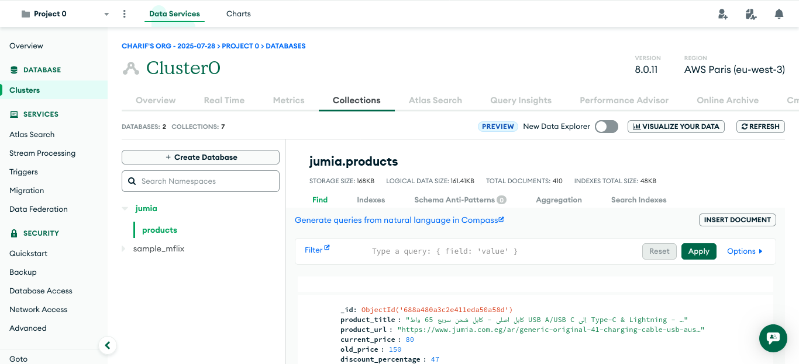
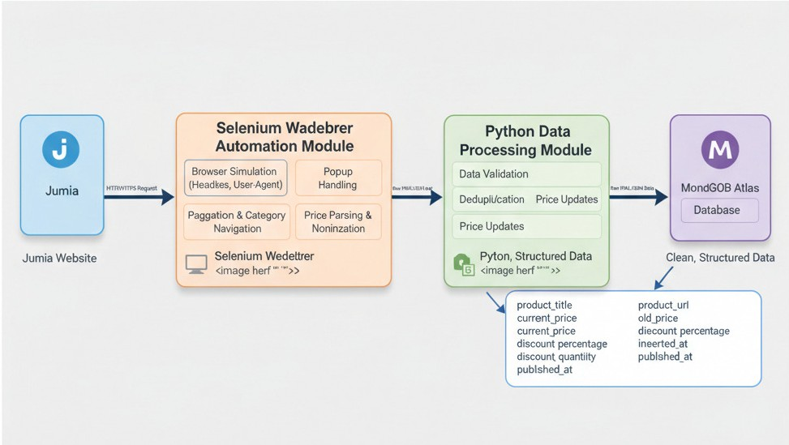
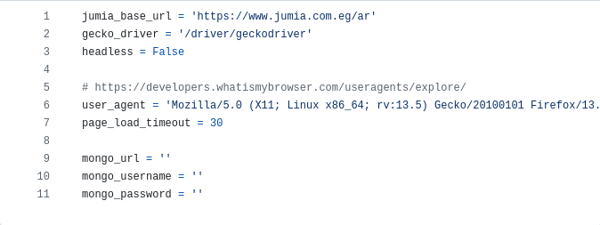

Project Overview
The Jumia Web Scraper is an advanced, automated data collection system designed to extract product information from Jumia, one of Africa's largest e-commerce platforms. This robust solution provides businesses with real-time access to product data, pricing information, and market intelligence.

Caption: Jumia's main interface showing electronics and phone categories being monitored
Built with enterprise-grade technologies and designed for scalability, this scraper efficiently collects and organizes product data while respecting website resources and maintaining data integrity through sophisticated database management.
Purpose & Business Goals
This project addresses critical business needs in the competitive e-commerce landscape:
Market Intelligence
Gather comprehensive product and pricing data to understand market trends and competitor positioning in the African e-commerce market.
Price Monitoring
Track price changes, discounts, and promotional activities across thousands of products in real-time.
Inventory Analysis
Monitor product availability and catalog changes to identify market opportunities and trends.
Competitive Research
Enable data-driven decision making for pricing strategies, product selection, and market positioning.
Key Features & Functionalities
🔄 Automated Data Collection
- Multi-Category Scraping: Simultaneously collects data from multiple product categories (Electronics, Phones & Tablets)
- Pagination Support: Automatically navigates through multiple pages to ensure complete data coverage
- Smart Data Extraction: Intelligently extracts product titles, URLs, current prices, original prices, and discount information
- Popup Handling: Automatically detects and closes website popups to maintain scraping continuity
💾 Intelligent Database Management
- Duplicate Prevention: Advanced logic prevents duplicate entries while maintaining data integrity
- Price Change Tracking: Automatically detects and updates price changes with timestamp tracking
- Data Versioning: Maintains historical data for trend analysis and reporting
- Cloud Database: Utilizes MongoDB Atlas for scalable, reliable data storage

Caption: MongoDB dashboard displaying organized product data with price tracking capabilities
🛡️ Advanced Browser Automation
- Headless Operation: Runs invisibly in the background for efficient resource utilization
- User Agent Rotation: Configurable user agents to maintain scraping reliability
- Resource Optimization: Optional image loading disable for faster scraping performance
- Error Handling: Robust error handling ensures continuous operation
Technology Stack & Architecture
Built with modern, industry-standard technologies for reliability and performance:
Python 3.x
Selenium WebDriver
Mozilla Firefox
MongoDB Atlas
PyMongo
Regular Expressions
JSON Processing
DateTime Management

Caption: System architecture overview showing data flow from web scraping to database storage
How the System Works
The scraper follows a sophisticated, multi-step workflow designed for efficiency and reliability:
Browser Initialization
Configures Firefox browser with optimized settings including headless mode, custom user agents, and resource management preferences.
Category Navigation
Systematically navigates through target categories (Electronics, Phones & Tablets) with intelligent URL construction.
Page Processing
Loads each page with controlled timing, handles popups automatically, and ensures complete page rendering before data extraction.
Data Extraction
Uses precise CSS selectors to extract product information including titles, URLs, prices, and discount calculations.
Data Validation & Processing
Validates extracted data, performs price calculations, calculates discount percentages, and formats data for storage.
Database Operations
Intelligently inserts new products or updates existing records with price changes, maintaining complete audit trails.
Sample Data Output & Results
The system captures comprehensive product information structured for easy analysis and reporting:
| Field |
Description |
Sample Data |
| Product Title |
Complete product name as displayed |
Samsung Galaxy A54 128GB |
| Product URL |
Direct link to product page |
https://jumia.com/samsung-galaxy... |
| Current Price |
Active selling price |
299,000 CFA |
| Original Price |
Pre-discount price (if applicable) |
399,000 CFA |
| Discount Percentage |
Calculated discount rate |
25% |
| Discount Amount |
Absolute savings amount |
100,000 CFA |
| Timestamps |
Data insertion and update tracking |
2024-01-15 10:30:25 |
Performance & Scalability
Designed for high-performance data collection with impressive processing capabilities:
24/7
Monitoring Capability
Client Benefits & Value Proposition
- Automated Market Research: Eliminate manual data collection with automated, accurate product monitoring
- Real-Time Price Intelligence: Stay ahead of market changes with instant price update notifications
- Competitive Advantage: Make data-driven pricing and inventory decisions based on comprehensive market data
- Cost Efficiency: Reduce research costs and time-to-market with automated data collection
- Scalable Solution: Easily extend to additional categories, pages, or even different e-commerce platforms
- Data Integrity: Reliable, consistent data collection with built-in validation and error handling
- Historical Analysis: Track trends over time with comprehensive data versioning
- Export Ready: Data structured for easy integration with business intelligence tools and reporting systems
Business Use Cases
This solution serves multiple business scenarios across various industries:
🏬 E-commerce Retailers
Monitor competitor pricing, identify trending products, and optimize inventory decisions based on market data.
📊 Market Research Firms
Provide clients with comprehensive e-commerce market analysis and pricing trend reports.
💰 Price Comparison Services
Build price comparison platforms with real-time data from major African e-commerce sites.
📱 Mobile App Developers
Integrate product data into mobile shopping apps or price tracking applications.
🔍 Business Intelligence
Feed data into BI systems for advanced analytics and strategic business planning.
📈 Investment Research
Analyze e-commerce market trends for investment decisions in African technology sectors.
Technical Specifications & Requirements
System Requirements
- Operating System: Windows, macOS, or Linux
- Python Version: 3.7 or higher
- RAM: Minimum 4GB (8GB recommended)
- Storage: 100MB+ for application, variable for data storage
- Internet: Stable broadband connection required
Configuration Options
- Headless Mode: Run with or without browser GUI
- User Agent Rotation: Configurable browser identification
- Image Loading: Optional for performance optimization
- Database Settings: Flexible MongoDB connection configuration
- Scraping Intervals: Customizable timing and page load settings

Caption: Configuration interface showing customizable scraping parameters and database settings
Implementation & Deployment
🚀 Quick Setup Process
- Environment Setup: Install Python dependencies and configure MongoDB connection
- WebDriver Installation: Set up Firefox WebDriver for browser automation
- Configuration: Customize scraping parameters, database settings, and operational preferences
- Testing: Run initial test scraping to verify system functionality
- Deployment: Schedule automated runs or integrate with existing systems
🔧 Maintenance & Support
- Regular Updates: Adapt to website changes and maintain scraping accuracy
- Performance Monitoring: Track system performance and optimize as needed
- Data Quality Assurance: Regular data validation and cleaning processes
- Technical Support: Ongoing support for troubleshooting and enhancements